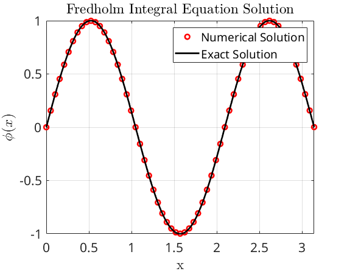
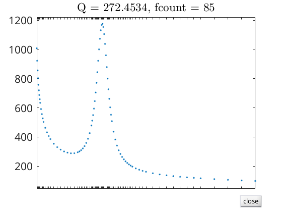
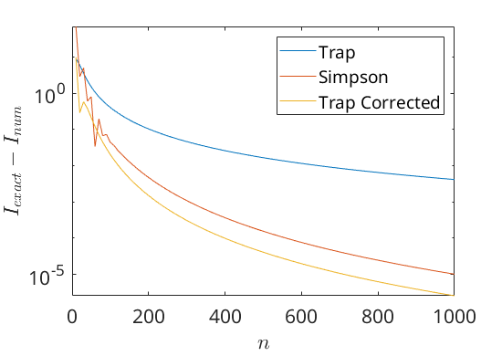
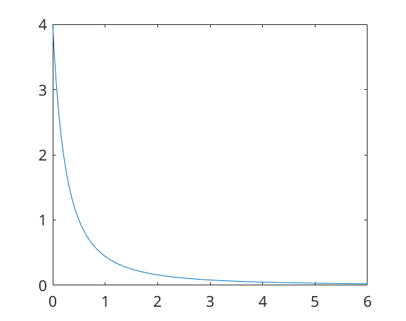

Contents
Preperation of the workspace
clear all
clc
close all
fontsize = 16;
set(0,'DefaultTextInterpreter','latex')
set(0,'DefaultAxesFontSize',fontsize)
set(0,'DefaultLegendFontSize',fontsize)
colors = ["#000000","#1b9e77","#d95f02","#7570b3","#0099FF"];
Problem 1
a = 0;
b = pi;
N = 60;
h = (b - a) / N;
t = linspace(a,b,N+1);
x = t;
x_smooth = linspace(a,b,1e3);
phi_exact = @(x) sin(3 * x);
f = pi * x.^2;
k = zeros(N+1, N+1);
b_vec = zeros(N, 1);
for i = 1:N+1
for j = 1:N+1
kval = 3*(0.5*sin(3*x(i)) - t(j)*x(i)^2);
if j == 1 || j == N+1
K(i,j) = (h/2)*kval;
else
K(i,j) = h*kval;
end
end
end
I = eye(N+1);
A = I-K;
phi_num = A\f';
figure;
plot(x, phi_num, 'ro', 'LineWidth', 2);
hold on;
plot(x_smooth, phi_exact(x_smooth), 'k-', 'LineWidth', 2);
xlabel('x');
ylabel('$\phi(x)$');
legend('Numerical Solution', 'Exact Solution');
title('Fredholm Integral Equation Solution');
grid on;
error = norm(phi_num - phi_exact(x)', Inf);
disp(['Maximum error: ', num2str(error)]);
Maximum error: 0.001406

Problem 2
func =@(X) (100/(sqrt(X+0.01)))+1/((X-0.3)^2+0.001) - pi;
x = linspace(0,1,1000);
for i = 1:length(x)
f(i) = (100/(sqrt(x(i)+0.01)))+1/((x(i)-0.3)^2+0.001) - pi;
end
figure
plot(x,f)
xlabel("$x$")
ylabel("$f(x)$")
n=[10:10:1e3];
syms X
F=int((100/(sqrt(X+0.01)))+1/((X-0.3)^2+0.001) - pi,0,1);
t2=double(F)*ones(size(n));
for i=1:length(n);
x=linspace(0,1,n(i));
f = (100./(sqrt(x+0.01)))+1./((x-0.3).^2+0.001) - pi;
t(i)=trapz(x,f);
simp(i) = simpson(func,0,1,n(i));
t_end(i) = trapz_end(func,0,1,n(i));
error(i)=abs(t2(i) - t(i));
error_simp(i)=abs(t2(i) - simp(i));
error_end(i)=abs(t2(i) - t_end(i));
end
t(end)
simp(end)
t_end(end)
adapt = quadgui(func,0,1,1e-2)
figure
semilogy(n,error)
hold on
semilogy(n,error_simp)
hold on
semilogy(n,error_end)
xlabel("$n$")
ylabel("$I_{exact}-I_{num}$")
legend("Trap","Simpson","Trap Corrected")
 
Problem 3: Richardson Extrapolation
func3 = @(X) (X+0.5).^(-2);
dfunc3 = diff(func3,X);
dfunc3_ex = [double(subs(dfunc3,1)),double(subs(dfunc3,5))];
ho = 0.5;
tolerance = 1e-5;
x = linspace(0,6,1e3);
func3_plot = func3(x);
figure
plot(x,func3_plot)
[value(1),h(1),error(1)] = rich_extrap(func3,1,ho,dfunc3_ex(1),tolerance);
[value(2),h(2),error(2)] = rich_extrap(func3,5,ho,dfunc3_ex(2),tolerance);
h =
0.5000
h =
0.5000

Problem 4 Gauss Quadriture
alpha = 5;
func4 = @(X) exp(-(X.^2)).*cos(alpha*X);
exact4 = sqrt(pi)*exp((-alpha^2)/4);
error = 1;
n = 7
while error >= 1e-5
[xi,wi] = gauss_her(n);
inner = wi.*cos(alpha*xi);
I_num = sum(inner);
error = abs(exact4 - I_num)
n = n+1
end
n =
7
error =
0.2526
n =
8
error =
0.1035
n =
9
error =
0.0375
n =
10
error =
0.0122
n =
11
error =
0.0036
n =
12
error =
9.7060e-04
n =
13
error =
2.4100e-04
n =
14
error =
5.5457e-05
n =
15
error =
1.1890e-05
n =
16
error =
2.3860e-06
n =
17
Functions
function [value] = simpson(f,a,b,n)
h=(b-a)/n;
if rem(n,2)==1
fprintf('\n Given n was odd. Creating even sub-interval:');
n=n+1;
end
so=0;
se=0;
for k=1:1:n-1
x(k)=a+k*h;
y(k)=f(x(k));
if rem(k,2)==1
so=so+y(k);
else
se=se+y(k);
end
end
value = double(h/3*(f(a)+f(b)+4*so+2*se));
end
function [value] = trapz_end(f,a,b,n)
h=(b-a)/n;
inner_sum = 0;
for k=1:1:n-1
x(k)=a+k*h;
y(k)=f(x(k));
inner_sum = inner_sum+y(k);
end
syms X
df = diff(f,X);
df1 = double(subs(df,a));
df2 = double(subs(df,b));
value = double( h/2*(f(a)+f(b)+2*inner_sum) - h^2/12 *(df2-df1) );
end
function [df_rich,h,error] = rich_extrap(f,x,ho,exact,tolerance)
h = ho;
D = zeros(1, 4);
D(1) = (f(x + h) - f(x - h)) / (2 * h);
D(2) = (f(x + h/2) - f(x - h/2)) / (h);
D(3) = (f(x + h/4) - f(x - h/4)) / (h/2);
D(4) = (f(x + h/8) - f(x - h/8)) / (h/4);
for i = 1:3
for j = 1:(4-i)
D(j) = (2^(i+1) * D(j+1) - D(j)) / (2^(i+1) - 1);
end
end
df_rich = D(1);
error = abs(df_rich - exact);
h_current = h;
while error > tolerance
h_current = h_current / 2;
D(1) = (f(x + h_current) - f(x - h_current)) / (2 * h_current);
D(2) = (f(x + h_current/2) - f(x - h_current/2)) / h_current;
D(3) = (f(x + h_current/4) - f(x - h_current/4)) / (h_current/2);
D(4) = (f(x + h_current/8) - f(x - h_current/8)) / (h_current/4);
for i = 1:3
for j = 1:(4-i)
D(j) = (2^(i+1) * D(j+1) - D(j)) / (2^(i+1) - 1);
end
end
error = abs(df_rich - exact);
df_rich = D(1);
end
h = h_current
end
function [x,w] = gauss_her(n);
h(1,1)=1;
h(2,1:2)=[2 0];
for k=2:n
h(k+1,1:k+1)=2*[h(k,1:k) 0]-2*(k-1)*[0 0 h(k-1,1:k-1)];
end
Hn = h(n+1,:);
Hn_deriv = polyder(Hn);
x = roots(Hn);
w = 2^(n+1)*factorial(n)*sqrt(pi) ./...
(polyval(Hn_deriv,x)).^2;
end
function [Q,fcount] = quadgui(F,a,b,tol,varargin)
shg
clf reset
set(gcf,'doublebuffer','on','menubar','none', ...
'numbertitle','off','name','Quad gui')
if nargin < 4 | isempty(tol)
tol = 1.e-4;
end
if nargin < 3
F = @humps;
a = 0;
b = 1;
end
if ischar(F) & exist(F)~=2
F = inline(F);
elseif isa(F,'sym')
F = inline(char(F));
end
c = (a + b)/2;
fa = feval(F,a,varargin{:});
fc = feval(F,c,varargin{:});
fb = feval(F,b,varargin{:});
h = b - a;
x = [a c b];
y = [fa fc fb];
maxy = max(y);
miny = min(y);
for k = 1:63
v = feval(F,a+k*h/64,varargin{:});
maxy = real(max(maxy,v));
miny = real(min(miny,v));
end
set(gcf,'userdata',0)
plot(x,y,'.','markersize',6);
hold on
p(1) = fill(a,fa,'k');
p(2) = fill(b,fb,'k');
hold off
s = (maxy - miny)/20;
axis([a b miny-s maxy+s])
q(1) = uicontrol('string','step', ...
'units','normal','pos',[.65 .02 .08 .06], ...
'callback','set(gcf,''userdata'',1)');
q(2) = uicontrol('string','auto', ...
'units','normal','pos',[.75 .02 .08 .06], ...
'callback','set(gcf,''userdata'',2)');
q(3) = uicontrol('string','quit', ...
'units','normal','pos',[.85 .02 .08 .06], ...
'callback','set(gcf,''userdata'',3)');
[Q,k] = quadguistep(F, a, b, tol, fa, fc, fb, varargin{:});
fcount = k + 3;
title(sprintf('Q = %8.4f, fcount = %4.0f',Q,fcount))
delete(p);
delete(q(1:2));
set(q(3),'string','close','callback','close(gcf)')
end
function [Q,fcount] = quadguistep(F,a,b,tol,fa,fc,fb,varargin)
h = b - a;
c = (a + b)/2;
d = (a + c)/2;
e = (c + b)/2;
fd = feval(F,d,varargin{:});
fe = feval(F,e,varargin{:});
Q1 = h/6 * (fa + 4*fc + fb);
Q2 = h/12 * (fa + 4*fd + 2*fc + 4*fe + fb);
u1 = a:h/64:c;
v1 = polyinterp([a d c],[fa fd fc],u1);
u1 = [a u1 c];
v1 = [0 v1 0];
u2 = c:h/64:b;
v2 = polyinterp([c e b],[fc fe fb],u2);
u2 = [c u2 b];
v2 = [0 v2 0];
if (abs(Q2 - Q1) <= tol)
color = [0 2/3 0];
else
color = [.6 .6 .6];
end
p = flipud(get(gca,'child'));
x = [get(p(1),'xdata') d e];
y = [get(p(1),'ydata') fd fe];
set(p(1),'xdata',x,'ydata',y)
set(p(2),'xdata',u1,'ydata',v1,'facecolor',color)
set(p(3),'xdata',u2,'ydata',v2,'facecolor',color)
set(gca,'xtick',sort(x),'xticklabel',[]);
title(num2str(length(x)))
pause(.25)
while get(gcf,'userdata') == 0
pause(.25)
end
if get(gcf,'userdata') == 1
set(gcf,'userdata',0)
end
if (abs(Q2 - Q1) <= tol) | (get(gcf,'userdata') == 3)
Q = Q2 + (Q2 - Q1)/15;
fcount = 2;
else
[Qa,ka] = quadguistep(F, a, c, tol, fa, fd, fc, varargin{:});
[Qb,kb] = quadguistep(F, c, b, tol, fc, fe, fb, varargin{:});
Q = Qa + Qb;
fcount = ka + kb + 2;
end
end
function v = polyinterp(x,y,u)
n = length(x);
v = zeros(size(u));
for k = 1:n
w = ones(size(u));
for j = [1:k-1 k+1:n]
w = (u-x(j))./(x(k)-x(j)).*w;
end
v = v + w*y(k);
end
end
ans =
272.4573
ans =
272.4531
ans =
272.4531
adapt =
272.4534